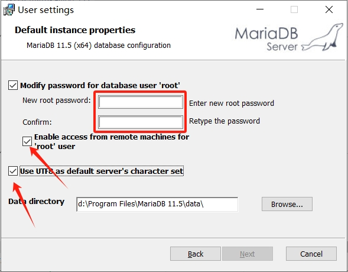

数据库学习环境搭建¶
备注
为降低学习难度，前期使用windows平台安装数据库进行学习，但生产环境中绝大多数还是使用linux平台。
MariaDB安装包下载¶
MariaDB站点在国外，不过可以通过国内镜像网站加速下载安装包，如清华大学镜像站 下载。
MariaDB安装¶
当安装包下载好后，直接双击下载好的文件即可安装，遇到以下界面时需注意：
红框里需要设置root管理员密码，箭头处需要勾选，其于界面及选项均保持默认即可。
安装后的状态确认¶
当安装完成后，我们需要确认一下数据库是否安装成功及运行状态，按下WIN+R键后，输入 services.msc，弹出windows的服务管理窗口，找到 MariaDB,可以看到它是运行状态是正在运行。
鼠标右键此条目，点击属性，可以进程开机自启等管理。
自此，数据库的学习环境已搭建成功，接下来可以使用此环境进行数据库的学习与实践。
请移步 快速入门